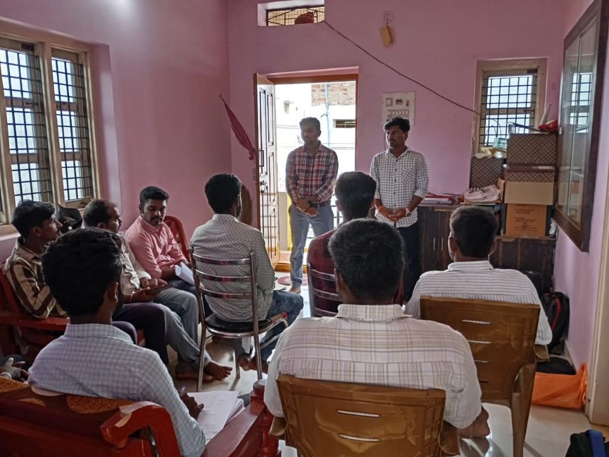
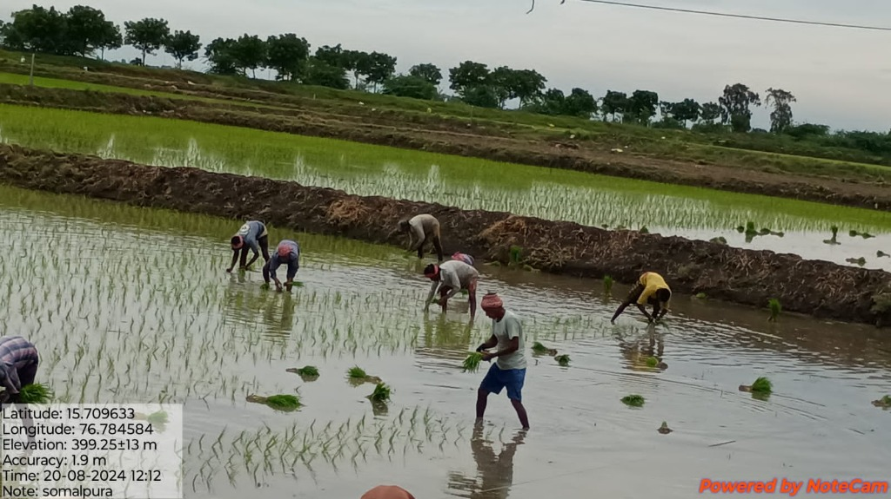
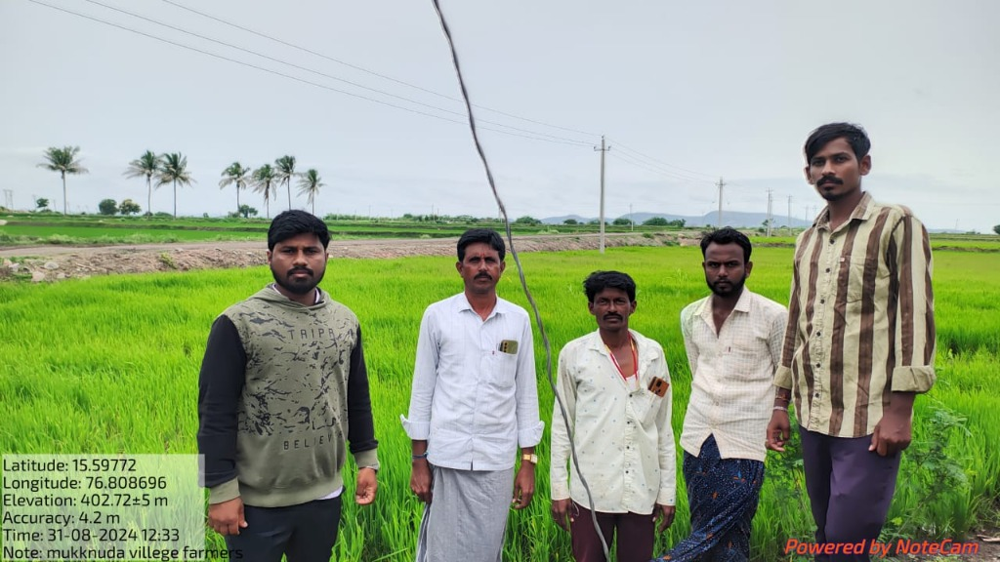
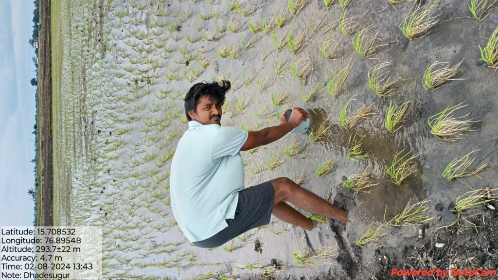
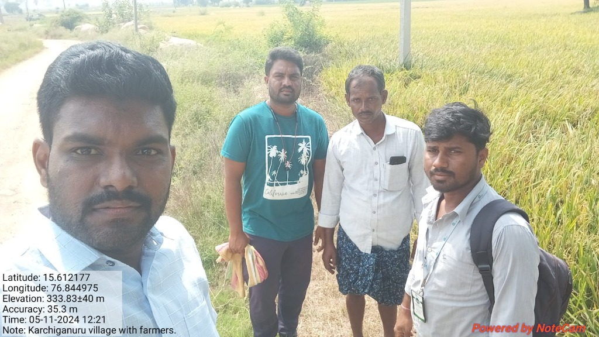
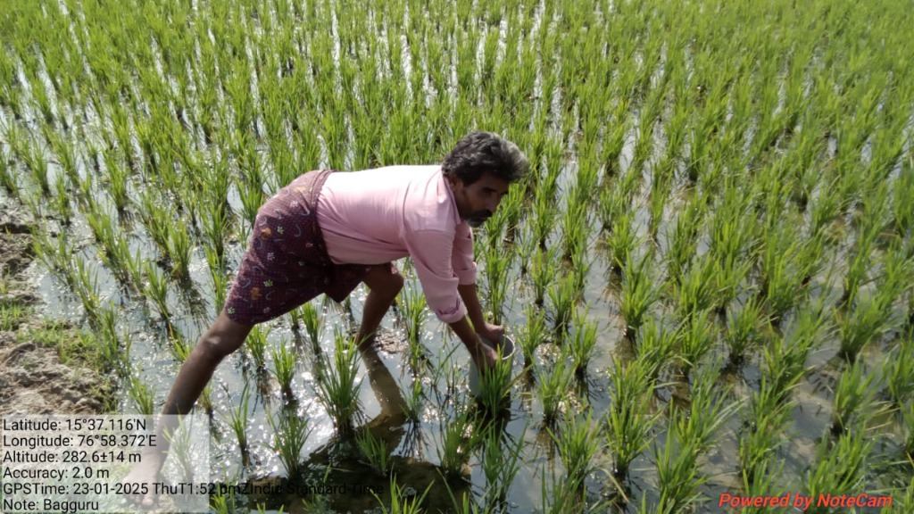

🌱 PCDF Trust | Sustainable Agriculture Initiative
Progressive Community &
Development Foundation Trust
AWD (Alternate Wetting and Drying) Project
"Saving Water Today, Building a Sustainable Farming Future."
A community-led paddy farming initiative that teaches farmers to irrigate smarter — reducing water use while protecting harvests, livelihoods, and the environment.
150+
Farmers Trained
30%
Water Saved (avg)
200+
Hectares Covered
12
Project Villages





